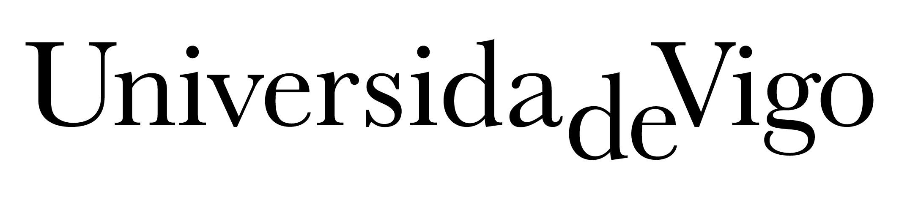

Subtítulo o línea descriptiva que resume el enfoque del proyecto.
Desarrollo breve de la idea principal que sostiene este punto del capítulo, con el dato o evidencia que la respalda.
Enfoque y tipo de estudio elegido para responder a la pregunta de investigación.
Criterios de selección de la población o los casos analizados en el estudio.
Técnicas e instrumentos empleados para procesar e interpretar los datos.
Descripción breve del primer resultado destacado del estudio.
Descripción breve del segundo resultado destacado del estudio.
Descripción breve del tercer resultado destacado del estudio.
“Cita o hallazgo principal que resume la contribución más relevante del trabajo.”
Nombre Apellido Apellido · nombre.apellido@uvigo.gal